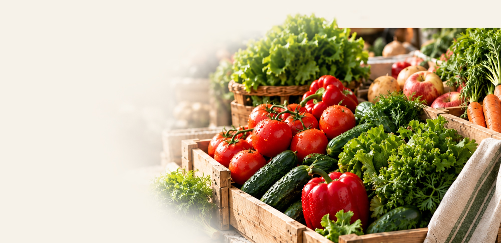
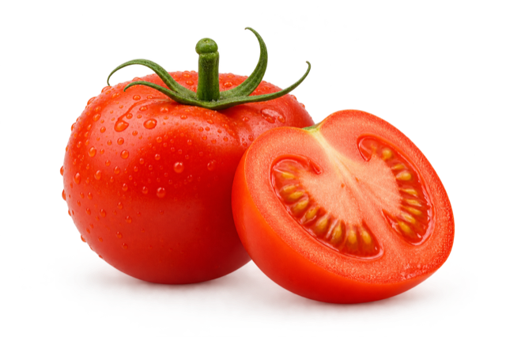
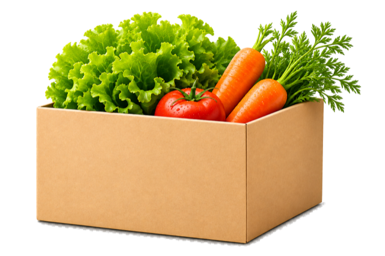
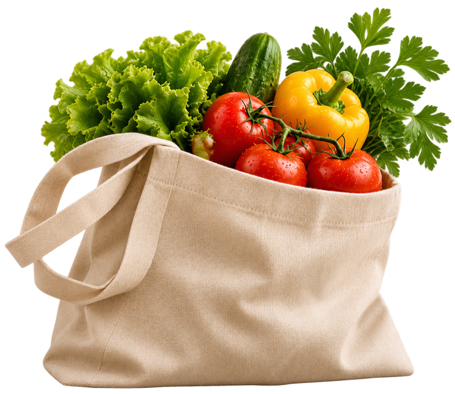
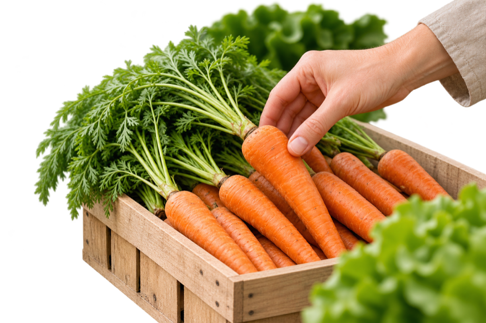

по другим районам — 199 ₽
Самое вкусное в этом сезоне
Всё, что лежит на нашем прилавке
Ассортимент и цены обновляем каждое утро. На сайте только то, что сегодня есть на прилавке.
Когда до рынка не дойти, а в магазине — не то
Мы привозим то же, что лежит на прилавке: тот же выбор и тот же вкус. Только идти никуда не нужно.
С маленьким ребёнком
Не нужно собираться всей семьёй ради нескольких покупок
После работы
Выберите в обед, а вечером всё будет дома. Интервал 16:00–20:00.
Во время болезни
Не придётся выходить из дома за покупками
Для родителей
Закажите продукты с доставкой прямо к их двери
Заказываете для пожилых родителей? Укажите их адрес и телефон. Оплатить можно сразу на сайте, тогда курьеру платить не нужно.
Собрать заказОт прилавка до вашей кухни
Простой и понятный процесс — от выбора продуктов до доставки к вашей двери.
Выбираете на сайте
Ассортимент обновляем
каждое утро. На сайте только
то, что сегодня на прилавке.
дальше шаг 0,5 кг

Соберём как для себя
Выбираем каждый плод
руками: спелый, без вмятин.
Взвешиваем точно.
в вашу пользу

Оплачиваете заказ
Онлайн, картой
или наличными курьеру.
после проверки заказа
Привозим в тот же день
Курьер приедет
в выбранный интервал.
Проверьте заказ при нём.
не берёте и не платите
От фермеров нашей области
Часть овощей нам привозят фермеры, которые выращивают их в нашей области. Такие товары на сайте отмечены зелёной плашкой «Местное».
- Картофель, морковь, свёкла —
основа на каждый день - Тыква, чеснок, красный лук
Доставим прямо
к вашей двери
Рынок теперь ближе, чем кажется
Выбираете овощи и фрукты дома — привезём своими курьерами без посредников

Сколько стоит
Стоимость доставки зависит от адреса:
- Юбилейный 99 ₽
- Другие районы 199 ₽
Когда привезём
Сегодня, в выбранный интервал. Время может незначительно отличаться из-за загрузки курьеров.
Можно заказать от 1 кг
Минимальной суммы нет, обязательно 1 кг весового товара.
Качественно
Товар без повреждений, взвешиваем точно.

Знакомый рынок
Удобный формат покупок
Вы уже знаете нас по рынку, мы давно продаём овощи и фрукты офлайн. Теперь сделали покупки для вас ещё удобнее.
Каждый заказ собираем внимательно, как для себя
Отбираем продукты из нашего ассортимента, которые приятно подавать к столу.
Часто спрашивают
Откуда овощи и фрукты?
С нашего прилавка на рынке. Товар мы закупаем на оптовом рынке и у местных фермеров. Местные овощи на сайте отмечены плашкой «Местное».
Почему цена указана за 1 кг, а заказать можно 1,5 кг?
Весовой товар продаём с шагом 0,5 кг: 1 кг, 1,5 кг, 2 кг и так далее. Взвешиваем точно, а небольшие отклонения считаем в вашу пользу.
Какой минимальный заказ?
Минимальной суммы нет. Нужно взять хотя бы 1 кг одного товара. Если он уже есть в корзине, остальное можно добавлять от 0,5 кг или поштучно.
Что если товара не окажется?
Мы обновляем ассортимент каждое утро, и на сайте только то, что сегодня лежит на прилавке.
Что если заказать вечером?
Заказы на сегодня принимаем до 19:00. Заказы, оформленные после 19:00, привезём на следующий день в интервал, который вы выберете при оформлении.
А если что-то не понравится?
Проверьте заказ при курьере. Если какой-то товар не понравился, не берите его и не платите за него. Если вы уже оплатили заказ онлайн, вернём деньги за эту позицию.